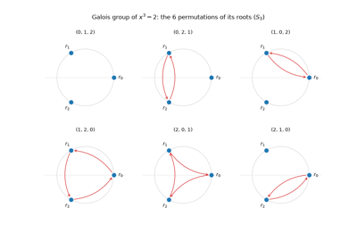
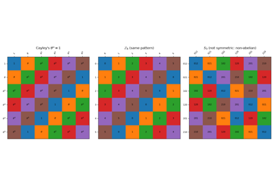
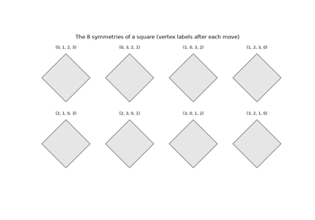
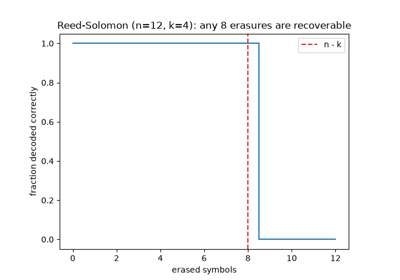

Breakthroughs in Abstract Algebra#
“Algebra is generous; she often gives more than is asked of her.” – attributed to Jean le Rond d’Alembert
Abstract algebra rests on one insight: the same structural skeleton –
a set with an operation that satisfies a short list of axioms – lies
behind symmetry groups, number systems, and equation-solving alike. Once
the specific objects are stripped away, only the relations between them
remain. This chronology traces the ideas behind
mathematicskit.abstract_algebra, from Renaissance polynomial
division and Évariste Galois’s letter written the night before his fatal
duel to the finite fields that now protect every error-corrected digital
signal.
1585-1801 – Polynomial Rings and Euclidean Division#
Polynomials with coefficients in a field can be divided with remainder exactly as integers can: given polynomials \(p\) and \(q\neq0\), there is a unique quotient and a unique remainder whose degree is strictly less than that of \(q\). Simon Stevin’s 1585 L’Arithmétique used this division to run Euclid’s algorithm on polynomials, computing their greatest common divisor. Carl Friedrich Gauss’s 1801 Disquisitiones Arithmeticae (see the number-theory chronology) then treated polynomial congruences with the same methods it applied to integers. In modern language, the ring of polynomials over a field is a Euclidean domain, just as the integers are.
Implementation: mathematicskit.abstract_algebra.core.base.Polynomial
implements this division algorithm (over \(\mathbb{Q}\) or a
finite field), and mathematicskit.abstract_algebra.systems.polynomial_ring.poly_gcd()
implements the resulting polynomial Euclidean algorithm. It has the same
structure as the integer version,
mathematicskit.number_theory.systems.modular_arithmetic.extended_gcd().
References: S. Stevin, L’Arithmétique (Leiden: Plantin, 1585); C. F. Gauss, Disquisitiones Arithmeticae (Leipzig: Fleischer, 1801).

Polynomial long division and the Euclidean algorithm
1770-1870 – Lagrange’s Theorem#
Joseph-Louis Lagrange’s 1770-71 memoir on the algebraic solution of equations used a special case of the theorem now named for him: the size of a subgroup divides the size of the whole group. Lagrange stated it for permutations of an equation’s roots, because abstract groups did not yet exist as a concept. Camille Jordan’s 1870 treatise gave the result a general statement and proof. A finite group splits into disjoint cosets of any subgroup, each exactly the subgroup’s size, so the subgroup’s order must divide the group’s order.
Implementation: mathematicskit.abstract_algebra.systems.subgroups.cyclic_subgroup()
and all_subgroups()
find a group’s subgroups directly.
left_cosets()
computes the coset partition that Lagrange’s theorem describes, and this
domain’s tests check that it always divides the group evenly.
References: J.-L. Lagrange, “Réflexions sur la résolution algébrique des équations,” Nouveaux Mémoires de l’Académie Royale des Sciences et Belles-Lettres de Berlin (1770-1771); C. Jordan, Traité des substitutions et des équations algébriques (Paris: Gauthier-Villars, 1870).

Lagrange’s theorem: subgroup order divides group order
1799-1824 – Ruffini, Abel, and Solvable Groups#
Paolo Ruffini’s 1799 treatise argued, with a gap, that the general equation of degree five cannot be solved by radicals, and Niels Henrik Abel gave a complete proof in 1824. Évariste Galois later explained why: an equation is solvable by radicals exactly when its group of root permutations is solvable, meaning that repeatedly taking commutator subgroups eventually reaches the trivial group. For the symmetric group \(S_5\) the process stops at the alternating group \(A_5\), which equals its own commutator subgroup. The general quintic, whose group is \(S_5\), therefore has no formula in radicals.
Implementation: mathematicskit.abstract_algebra.systems.structure.commutator_subgroup()
and derived_series()
compute the series of commutator subgroups, and
is_solvable()
checks whether it reaches \(\{e\}\). This domain’s tests confirm
that \(S_4\) is solvable and \(S_5\) is not.
References: P. Ruffini, Teoria generale delle equazioni (Bologna, 1799); N. H. Abel, “Beweis der Unmöglichkeit, algebraische Gleichungen von höheren Graden als dem vierten allgemein aufzulösen,” Journal für die reine und angewandte Mathematik 1 (1826), 65-84.

Abel-Ruffini and solvable groups: why S_5 blocks the quintic
1830-1893 – Galois Fields#
Évariste Galois’s 1830 paper “Sur la théorie des nombres” extended modular arithmetic from a prime modulus \(p\) to fields with \(p^n\) elements, now called Galois fields \(\mathrm{GF}(p^n)\) in his honor. The construction takes the integers mod \(p\) and adjoins a root of an irreducible polynomial of degree \(n\), just as the complex numbers extend the reals by adjoining a root of \(x^2+1\). Eliakim Hastings Moore’s paper at the 1893 International Mathematical Congress in Chicago gave finite fields their first rigorous general treatment. Moore proved that every finite field has prime-power order and that any two fields of the same order are isomorphic.
Implementation: mathematicskit.abstract_algebra.systems.finite_fields.GF
implements this construction.
find_irreducible_polynomial()
finds a defining irreducible polynomial by brute-force search, and the
field arithmetic reduces every product modulo that polynomial. The same
construction underlies Reed-Solomon error-correcting codes and the
byte-level arithmetic of the Advanced Encryption Standard in
\(\mathrm{GF}(2^8)\).
References: É. Galois, “Sur la théorie des nombres,” Bulletin des Sciences Mathématiques 13 (1830), 428-435; E. H. Moore, “A Doubly-Infinite System of Simple Groups,” Bulletin of the New York Mathematical Society 3(3) (1893), 73-78.

GF(8): finding an irreducible polynomial and building the field
1832-1846 – Galois and the Birth of Group Theory#
In a letter written the night before the duel that killed him at twenty, Évariste Galois summarized a theory linking whether a polynomial equation can be solved by radicals to the structure of a group of permutations of its roots. Along the way he introduced the word “group” (groupe) in essentially its modern technical sense. Niels Henrik Abel had already proved in 1824 that the general quintic has no solution by radicals; Galois’s theory went further and decided, for any given equation, whether it has one. His manuscripts stayed unpublished and largely unread until Joseph Liouville edited and published them in 1846, fourteen years after Galois’s death. Only then did mathematicians see that a question about equations could be turned into a purely structural question about permutations.
Implementation: mathematicskit.abstract_algebra.systems.groups.PermutationGroup
implements Galois’s permutation groups, building the full element set
by closing a set of generators under composition. The symmetric group
\(S_3\) in this domain’s tests is non-abelian, and non-commutativity
is exactly the structural feature Galois’s theory turns on.
References: É. Galois, “Œuvres mathématiques d’Évariste Galois,” ed. J. Liouville, Journal de Mathématiques Pures et Appliquées 11 (1846), 381-444.

Galois’s permutation groups: S_3 permuting the roots of x^3 - 2
1843 – Hamilton’s Quaternions#
On 16 October 1843, walking along Dublin’s Royal Canal, William Rowan Hamilton found the rules for a four-dimensional number system and carved them into Brougham Bridge: \(i^2 = j^2 = k^2 = ijk = -1\). Quaternion multiplication is not commutative (\(ij = k\) but \(ji = -k\)), and giving up commutativity was a decisive step toward abstract algebra. The eight units \(\pm1, \pm i, \pm j, \pm k\) form the quaternion group \(Q_8\), the smallest non-abelian group in which every subgroup is normal.
Implementation: mathematicskit.abstract_algebra.systems.groups.QuaternionGroup
implements \(Q_8\) with Hamilton’s multiplication rules, and this
domain’s tests check his relations, the element orders, and that every
subgroup is normal.
References: W. R. Hamilton, “On Quaternions; or on a New System of Imaginaries in Algebra,” Philosophical Magazine Series 3, 25 (1844), 10-13.
1845 – Cauchy’s Theorem on Elements of Prime Order#
Lagrange’s theorem says the order of every element divides the order of the group, but not every divisor need occur as an element order. Augustin-Louis Cauchy proved in 1845 that every prime divisor does: if a prime \(p\) divides \(|G|\), then \(G\) has an element of order \(p\). James McKay’s one-paragraph 1959 proof, which counts solutions of \(x_1 x_2 \cdots x_p = e\), shows more: the number of elements of order \(p\) is congruent to \(-1 \pmod p\).
Implementation: mathematicskit.abstract_algebra.systems.structure.elements_of_order()
lists the elements of a given order, and this domain’s tests check
Cauchy’s theorem and McKay’s congruence on cyclic, symmetric, dihedral,
and quaternion groups.
References: A.-L. Cauchy, “Mémoire sur les arrangements que l’on peut former avec des lettres données,” Exercices d’analyse et de physique mathématique 3 (1845), 151-252; J. H. McKay, “Another Proof of Cauchy’s Group Theorem,” American Mathematical Monthly 66(2) (1959), 119.
1854 – Cayley’s Abstract Definition and the Cayley Table#
Arthur Cayley’s 1854 paper “On the Theory of Groups, as Depending on the Symbolic Equation \(\theta^n=1\)” gave the first abstract definition of a group: a set with a binary operation, independent of any particular representation as permutations or numbers. The same paper introduced the square multiplication table, now named for him, which displays the complete structure of a small finite group at a glance.
Implementation: mathematicskit.abstract_algebra.core.base.FiniteGroup.cayley_table()
builds this table for any concrete group implementation, using only the
abstract elements/operate interface, in the spirit of Cayley’s
definition.
References: A. Cayley, “On the Theory of Groups, as Depending on the Symbolic Equation \(\theta^n = 1\),” Philosophical Magazine Series 4, 7(42) (1854), 40-47.

Cayley’s abstract group and its multiplication table
1869-1889 – Jordan, Hölder, and Composition Series#
Camille Jordan’s 1869 commentary on Galois broke a group into a chain \(G = G_0 > G_1 > \cdots > G_m = \{e\}\), each term a maximal normal subgroup of the one before, so that every factor \(G_i/G_{i+1}\) is simple. Jordan proved that the factor orders do not depend on the chain chosen, and Otto Hölder proved in 1889 that the factors themselves agree up to isomorphism. Simple groups thus play the role of prime numbers: every finite group is built from them, although, unlike primes, the same factors can assemble into different groups.
Implementation: mathematicskit.abstract_algebra.systems.structure.composition_series()
builds a composition series by repeatedly taking a largest proper
normal subgroup, returning the chain and its factor orders. The
example shows \(\mathbb{Z}_{12}\) and \(D_6\), two different
groups with the same factors.
References: C. Jordan, “Commentaire sur Galois,” Mathematische Annalen 1 (1869), 141-160; O. Hölder, “Zurückführung einer beliebigen algebraischen Gleichung auf eine Kette von Gleichungen,” Mathematische Annalen 34 (1889), 26-56.

Jordan-Hölder: composition series and their factors
1872 – Sylow’s Theorems#
Ludwig Sylow’s 1872 paper gave a partial converse to Lagrange’s theorem. If \(p^k\) is the largest power of a prime \(p\) dividing \(|G|\), then \(G\) has subgroups of order \(p^k\), now called Sylow \(p\)-subgroups. They are all conjugate to one another, and their number \(n_p\) satisfies \(n_p \equiv 1 \pmod p\) and \(n_p \mid |G|/p^k\). These counting constraints are often enough to show that a group of a given order cannot be simple, and they remain a basic tool for classifying finite groups.
Implementation: mathematicskit.abstract_algebra.systems.structure.sylow_subgroups()
finds every Sylow \(p\)-subgroup and returns them in a
SylowResult. For
\(S_4\) it finds three Sylow 2-subgroups of order 8 and four Sylow
3-subgroups of order 3, as the theorems require.
References: L. Sylow, “Théorèmes sur les groupes de substitutions,” Mathematische Annalen 5 (1872), 584-594.

1872 – Klein’s Erlangen Program and Symmetry Groups#
Felix Klein’s 1872 inaugural program at Erlangen proposed classifying geometries by their groups of transformations: Euclidean geometry studies what rigid motions preserve, projective geometry what projective maps preserve, and so on. The finite shadows of this idea are the dihedral groups \(D_n\), the \(2n\) rotations and reflections that map a regular \(n\)-gon onto itself. Generated by a rotation \(r\) and a reflection \(s\) with \(r^n = s^2 = e\) and \(srs = r^{-1}\), they are the simplest non-abelian groups that arise directly as symmetries.
Implementation: mathematicskit.abstract_algebra.systems.groups.DihedralGroup
realizes \(D_n\) as permutations of the polygon’s vertices, and
this domain’s tests check its order and defining relations.
References: F. Klein, Vergleichende Betrachtungen über neuere geometrische Forschungen (Erlangen: Deichert, 1872).

Klein’s Erlangen program: the symmetry group of a square
1887-1897 – Frobenius, Burnside, and Counting Orbits#
When a group acts on a finite set, the number of orbits equals the average number of points each group element fixes:
Augustin-Louis Cauchy knew the formula in 1845, and Ferdinand Georg Frobenius stated it in 1887, but it became widely known through William Burnside’s 1897 textbook and still carries his name. Counting fixed points is usually much easier than listing orbits, which makes the lemma the standard tool for counting objects up to symmetry, such as necklaces up to rotation.
Implementation: mathematicskit.abstract_algebra.systems.actions.count_orbits()
applies Burnside’s lemma to any group action, and
orbits() lists
the orbits directly as a cross-check. The tests reproduce the classical
necklace counts and the 13 two-colored bracelets of six beads.
References: F. G. Frobenius, “Ueber die Congruenz nach einem aus zwei endlichen Gruppen gebildeten Doppelmodul,” Journal für die reine und angewandte Mathematik 101 (1887), 273-299; W. Burnside, Theory of Groups of Finite Order (Cambridge: Cambridge University Press, 1897).
1889 – Hölder and Quotient Groups#
A subgroup \(N\) is normal when \(gNg^{-1} = N\) for every \(g\), the notion Évariste Galois had singled out. Otto Hölder’s 1889 paper made the resulting construction explicit: the cosets \(gN\) of a normal subgroup form a group of their own, the quotient \(G/N\), with \((aN)(bN) = (ab)N\). Quotients let a large group be studied through smaller ones. For example, dividing the symmetric group \(S_4\) by its normal Klein four-group gives a group isomorphic to \(S_3\).
Implementation: mathematicskit.abstract_algebra.systems.structure.is_normal_subgroup()
tests normality, and QuotientGroup
builds \(G/N\) with cosets as elements, refusing subgroups that are
not normal.
References: O. Hölder, “Zurückführung einer beliebigen algebraischen Gleichung auf eine Kette von Gleichungen,” Mathematische Annalen 34 (1889), 26-56.
1927 – Noether’s Isomorphism Theorems#
A homomorphism \(\varphi: G \to H\) preserves the group operation. Its kernel, the elements sent to the identity, is always a normal subgroup. Emmy Noether’s 1927 paper stated the isomorphism theorems in their modern, axiomatic form, for groups with operators and for rings and modules alike. The first theorem says \(G/\ker\varphi \cong \varphi(G)\), so in particular \(|G| = |\ker\varphi| \cdot |\varphi(G)|\). Noether’s structural viewpoint, carried into textbooks by Bartel van der Waerden’s Moderne Algebra, shaped how abstract algebra is taught today.
Implementation: mathematicskit.abstract_algebra.systems.homomorphisms.analyze_homomorphism()
checks the homomorphism property and returns the kernel and image, and
the tests verify the first isomorphism theorem, including the sign map
from \(S_4\) onto \(\mathbb{Z}_2\) with kernel \(A_4\).
References: E. Noether, “Abstrakter Aufbau der Idealtheorie in algebraischen Zahl- und Funktionenkörpern,” Mathematische Annalen 96 (1927), 26-61.

1960 – Reed-Solomon Codes over Finite Fields#
Irving Reed and Gustave Solomon’s 1960 paper turned finite-field algebra into an error-correcting code. A message of \(k\) symbols becomes the coefficients of a polynomial of degree below \(k\), and the codeword lists its values at \(n\) distinct points of a finite field. Because a polynomial of degree below \(k\) is determined by any \(k\) of its values, the message survives the loss of up to \(n-k\) symbols. Reed-Solomon codes went on to protect compact discs, QR codes, deep-space transmissions, and data storage.
Implementation: mathematicskit.abstract_algebra.systems.codes.rs_encode()
evaluates the message polynomial over \(\mathrm{GF}(p)\), and
rs_decode_erasures()
recovers the message from any \(k\) surviving symbols by Lagrange
interpolation. The tests confirm the code’s minimum distance
\(n-k+1\).
References: I. S. Reed and G. Solomon, “Polynomial Codes over Certain Finite Fields,” Journal of the Society for Industrial and Applied Mathematics 8(2) (1960), 300-304.

Reed-Solomon codes: recovering from erasures